공조냉동기계기사(구) (2016-03-06 기출문제)
1과목: 기계열역학
1. 계가 비가역 사이클을 이룰때의 클라우지우스 (Clausius)의 적분을 옳게 나타낸 것은? (단, T는 온도, Q는 열량)
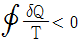
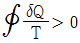
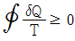
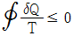
(정답률: 60%)

2. 여름철 외기의 온도가 30℃일 때 김치 냉장고의 내부를 5℃로 유지하기 위해 3 kW의 열을 제거해야 한다. 필요한 최소 동력은 약 몇 kW인가? (단, 이 냉장고는 카르노 냉동기이다.)
- 0.27
- 0.54
- 1.54
- 2.73
(정답률: 63%)
3. 내부에너지가 40kJ, 절대 압력이 200kPa, 체적이 0.1m3, 절 대온도가 300K인 계의 엔탈피는 약 몇 kJ인가?
- 42
- 60
- 80
- 240
(정답률: 68%)
4. 2개의 정적과정과 2개의 등온과정으로 구성된 동력 사이클은?
- 브레이턴(brayton)사이클
- 에릭슨(ericsson)사이클
- 스털링(stirling)사이클
- 오토(otto)사이클
(정답률: 48%)
5. 다음 중 폐쇄계의 정의로 올바르게 설명한 것은?
- 동작물질 및 열과 일이 모두 그 경계를 통과할 수 있는 특정 공간
- 동작물질은 계의 경계를 통과할수 없으나 열과 일은 경계를 통과 할 수 있는 특정 공간
- 동작물질은 계의 경계를 통과할 수 있으나 열과 일은 경계를 통과할 수 없는 특정 공간
- 동작물질 및 열과 일이 그 경계를 통과하지 아니하는 특정 공간
(정답률: 59%)
6. 증기압축 냉동기에서 냉매가 순환되는 경로를 올바르게 나타낸 것은?
- 증발기 → 팽창밸브 → 응축기 → 압축기
- 증발기 → 압축기 → 응축기 → 팽창밸브
- 팽창밸브 → 압축기 → 응축기 → 증발기
- 응축기 → 증발기 → 압축기 → 팽창밸브
(정답률: 76%)
7. 한 시간에 3600kg의 석탄을 소비하여 6⑤0kW를 발생하는 증기터빈을 사용하는 화력발전소가 있다면, 이 발전소의 열효율은 약 몇 %인가? (단, 석탄의 발열량은 29,900 kJ/kg 이다.)
- 약 20 %
- 약 30 %
- 약 40 %
- 약 50 %
(정답률: 64%)
8. 4kg의 공기가 들어 있는 용기 A(체적 0.5m3)와 진공 용기 B(체적 0.3 m3)사이를 밸브로 연결하였다. 이 밸브를 열어서 공기가 자유 팽창하여 평형에 도달했을 경우 엔트로피 증가량은 약 몇 kJ/K인가? (단, 온도 변화는 없으며 공기의 기체상수는 0.287kJ/kgㆍK이다.)
- 0.54
- 0.49
- 0.42
- 0.37
(정답률: 53%)
9. 랭킨사이클을 구성하는 요소는 펌프, 보일러, 터빈, 응축기로 구성된다. 각 구성 요소가 수행하는 열역학적 변화과정으로 틀린 것은?
- 펌프 : 단열 압축
- 보일러 : 정압 가열
- 터빈 : 단열 팽창
- 응축기 : 정적 냉각
(정답률: 67%)
10. 실린더 내부에 기체가 채워져 있고 실린더에는 피스톤이 끼워져 있다. 초기 압력 50 kPa, 초기 체적 0.⑤ m3의 기체를 버너로 PV1.4 = constant 가 되도록 가열하여 기체 의 체적이 0.2m3이 되었다면, 이 과정동안에 시스템이 한 일은?
- 1.33kJ
- 2.66kJ
- 3.99kJ
- 5.32kJ
(정답률: 51%)
11. 준평형 정적과정을 거치는 시스템에 대한 열전달량은? (단, 운동에너지와 위치에너지의 변화는 무시한다.)
- 0이다.
- 이루어진 일량과 같다.
- 엔탈피 변화량과 같다.
- 내부에너지 변화량과 같다.
(정답률: 67%)
12. 체적이 0.01m3인 밀폐용기에 대기압의 포화혼합물이 들어있다. 용기 체적의 반은 포화액체, 나머지반은 포화증기가 차지하고 있다면, 포화혼합물 전체의 질량과 건도는? (단, 대기압에서 포화액체와 포화증기의 비체적은 각각 0.001044 m3/kg, 1.6729m2/kg이다.)
- 전체질량 : 0.0119kg, 건도 : 0.50
- 전체질량 : 0.0119kg, 건도 : 0.00062
- 전체질량 : 4.792kg, 건도 : 0.50
- 전체질량 : 4.792kg, 건도 : 0.00062
(정답률: 49%)
13. 질량이 m이고 비체적이 v인 구(sphere)의 반지름이 R이면 질량이 4m이고, 비체적이 2v인 구의반지름은?
- 2R
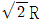
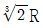
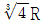
(정답률: 51%)
14. 밀폐 시스템이 압력 P1 = 200 kPa, 체적 V1 = 0.1 m3인 상태에서 P2 = 100 kPa, 체적 V2 = 0.3 m3인 상태까지 가역팽창되었다. 이 과정이 P-V선도에서 직선으로 표시된다면 이 과정 동안 시스템이 한 일은 약 몇 kJ 인가?
- 10
- 20
- 30
- 45
(정답률: 49%)
15. 온도 600℃의 구리7kg을 8kg의 물속에 넣어 열적평형을 이룬 후 구리와 물의 온도가 64.2℃가 되었다면 물의 처음 온도는 약 몇 ℃인가? (단, 이 과정 중 열손실은 없고, 물의 비열 4.184, 구리의 비열은 0.386 kJ/kgㆍK이다.)
- 6 ℃
- 15 ℃
- 21 ℃
- 84 ℃
(정답률: 53%)
16. 고온 400℃, 저온 50℃의 온도범위에서 작동하는 carnot 사이클 열기관의 열효율을 구하면 몇 %인가?
- 37
- 42
- 47
- 52
(정답률: 64%)
17. 비열비가 1.29, 분자량이 44인 이상 기체의 정압비열은 약 몇 kJ/kgㆍK 인가? (단, 일반기체상수는 8.314 kJ/kmolㆍK이다.)
- 0.51
- 0.69
- 0.84
- 0.91
(정답률: 57%)
18. 랭킨사이클의 열효율 증대 방법에 해당하지 않는 것은?
- 복수기(응축기) 압력 저하
- 보일러 압력 증가
- 터빈의 질량 유량 증가
- 보일러에서 증기를 고온으로 과열
(정답률: 38%)
19. 물 2kg을 20℃에서 60℃가 될 때까지 가열할 경우 엔트로피 변화량은 약 몇 kJ/K 인가? (단, 물의 비열은 4.184kJ/kgㆍK이고, 온도 변화과정에서 체적은 거의 변화가 없다고 가정한다.)
- 0.78
- 1.07
- 1.45
- 1.96
(정답률: 64%)
20. 기체가 열량 80kJ을 흡수하여 외부에 대하여 20kJ의 일을 하였다면 내부에너지 변화는 몇 kJ 인가?
- 20
- 60
- 80
- 100
(정답률: 68%)
2과목: 냉동공학
21. 프레온 냉매(CFC) 화합물은 태양의 무엇에 의해 분해되어 오존층파괴의 원인이 되는가?
- 자외선
- 감마선
- 적외선
- 알파선
(정답률: 77%)
22. 응축압력이 이상고압으로 나타나는 원인으로 가장 거리가 먼 것은?
- 응축기의 냉각관 오염 시
- 불응축가스가 혼입 시
- 응축부하 증대 시
- 냉매 부족 시
(정답률: 61%)
23. 다음은 물과 리듐브로마이드 용액을 사용하는 흡수식 냉동기의 특징으로 틀린 것은?
- 흡수기의 개수에 따라 단효용 또는 다중효용 흡수식 냉동기로 구분된다.
- 냉매로 물을 사용하고, 흡수제로 리듐브로마이드(LiBr)를 사용한다.
- 사이클은 압력-엔탈피 선도가 아닌 듀링선도를 사용하여 작동상 태를 표현한다.
- 단효용 흡수식 냉동기에서 냉매는 재생기, 응축기, 냉각기, 흡수기의 순서로 순환한다.
(정답률: 47%)
24. 2단 압축 냉동장치에 관한 설명으로 틀린 것은?
- 동일한 증발온도를 얻을 때 단단압축 냉동장치 대비 압축비를 감소시킬 수 있다.
- 일반적으로 두 개의 냉매를 사용하여 –30℃ 이하의 증발온도를 얻기 위해 사용된다.
- 중간 냉각기는 증발기에 공급하는액을 과냉각 시키고 냉동 효과를증대시킨다.
- 중간 냉각기는 냉매증기와 냉매액을 분리시켜 고단축 압축기 액백현상을 방지한다.
(정답률: 70%)
25. 열전달 현상에 대한 설명으로 가장 거리가 먼 것은?
- 대류는 유체의 흐름에 의해서 일어나는 현상이다.
- 전도는 고체 또는 정지유체에서의 열 이동 방법으로 물체는 움직이지 않고 그 물체의 구성 분자 간에 열 이 이동하는 현상이다.
- 태양과 지구사이의 열전달은 복사현상이다.
- 실제 열전달 현상에서는 전도, 대류, 복사가 각각 단독으로 일어난다.
(정답률: 72%)
26. 냉동능력 1RT로 압축되는 냉동기가 있다. 이 냉동기에서 응축기의 방열량은? (단, 응축기의 방열량은 냉동능력 의 1.2배로 한다.)
- 3.32kW
- 3.98kW
- 4.22kW
- 4.63kW
(정답률: 57%)
27. 암모니아 입형 저속 압축기에 많이 사용되는 포펫트밸브(poppet valve)에 관한 설명으로 틀린 것은?
- 중량이 가벼워 밸브 개폐가 불확 실하다.
- 구조가 튼튼하고 파손되는 일이 적다.
- 회전수가 높아지면 밸브의 관성 때문에 개폐가 자유롭지 못하다.
- 흡입밸브는 피스톤 상부 스프링으로 가볍게 지지되어 있다.
(정답률: 62%)
28. 어떤 냉장고의 증발기가 냉매와 공기의 평균 온도차가 7℃로 운전되고 있다. 이 때 증발기의 열통과율이 30kcal/m2ㆍhㆍ℃ 라고 하면 냉동톤 당 증발기의 소요 외표면적은?
- 15.81 m2
- 17.53 m2
- 20.70 m2
- 23.14 m2
(정답률: 61%)
29. 다음 이론 냉동사이클의 p-h선도에 대한 설명으로 옳은 것은? (단, 냉동장치의 냉매순환량은 540 kg/h이다.)(원본사진이 많이 흐립니다. 사진상의 수치가, (h1: 410), (h2 : 441.8), (h3,4 : 256), (hv : 406.3), (hL : 206.3) 신고가 있었습니다. 참고하시기 바랍니다.)
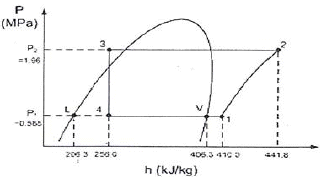
- 냉동능력은 약 23.1RT이다.
- 응축기의 방열량은 약 9.27kW이다.
- 냉동 사이클의 성적계수는 약 4.84이다.
- 증발기 입구에서 냉매의 건도는 약 0.8이다.
(정답률: 59%)
30. 냉각수량600L/min, 전열면적 80m2, 응축온도 32℃, 냉각수 입구 및 출구온도가 각각 23℃, 31℃ 인 수냉응축기의 냉각관 열통과율은?
- 720kcal/m2ㆍhㆍ℃
- 600kcal/m2ㆍhㆍ℃
- 480kcal/m2ㆍhㆍ℃
- 360kcal/m2ㆍhㆍ℃
(정답률: 50%)
31. 냉동장치의 고압부에 설치하지 않는 부속기기는?
- 투시경
- 유분리기
- 냉매액펌프
- 불응축 가스 분리기(gas purger)
(정답률: 43%)
32. 냉각탑에 대한 설명으로 틀린 것은?
- 밀폐식은 개방식 냉각탑에 비해 냉각수가 외기에 의한 오염될 염려가 적다.
- 냉각탑의 성능은 입구공기의 습구온도에 영향을 받는다.
- 쿨링 레인지(cooling range)는 냉각탑의 냉각수(입ㆍ출구 온도의 차이)값이다.
- 쿨링 어프로치(cooling approach)는 냉각탑의 냉각수 입구온도에서냉각탑 입구공기의 습구온도를 제한 값이다.
(정답률: 64%)
33. 팽창밸브에 관한 설명으로 틀린 것은?
- 정압식 팽창밸브는 증발압력이 일정하게 유지되도록 냉매의 유량을조절하기 위한 밸브이다.
- 모세관은 일반적으로 소형 냉장고에 적용되고 있다.
- 온도식 자동 팽창 밸브는 감온통이 저온을 받으면 냉매의 유량이 증가된다.
- 자동식 팽창밸브에는 플로트식이 있다.
(정답률: 59%)
34. 성적계수인 COP에 관한 설명으로 틀린 것은?
- 냉동기의 성능을 표시하는 무차원수로서 압축일량과 냉동효과의 비를 말한다.
- 열펌프의 성적계수는 일반적으로1보다 작다.
- 실제 냉동기에서는 압축효율도 COP에 영향을 미친다.
- 냉동사이클에서는 응축온도가 가능한 한 낮고, 증발온도가 높을수록 성적계수는 크다.
(정답률: 74%)
35. 브라인(2차 냉매)중 무기질 브라인이 아닌 것은?
- 염화마그네슘
- 에틸렌글리콜
- 염화칼슘
- 식염수
(정답률: 68%)
36. 냉방능력 1냉동톤 당 10L/min의 냉각수가 응축기에 사용되었다. 냉각수 입구의 온도가 32℃이면 출구온도는?(단, 응축열량은 냉방능력의 1.2배로 한다.)
- 22.5℃
- 32.6℃
- 38.6℃
- 43.5℃
(정답률: 60%)
37. 압축 냉동 사이클에서 응축기 내부 압력이 일정할 때, 증발 온도가 낮아지면 나타나는 현상으로 가장 거리가 먼 것은?
- 압축기 단위 흡입 체적당 냉동효과 감소
- 압축기 토출가스 온도 상승
- 성적계수 감소
- 과열도 감소
(정답률: 60%)
38. 터보압축기의 특징으로 틀린 것은?
- 회전운동이므로 진동이 적다.
- 냉매의 회수장치가 불필요하다.
- 부하가 감소하면 서징현상이 일어난다.
- 응축기에서 가스가 응축되지 않는 경우에도 이상 고압이 되지 않는다.
(정답률: 46%)
39. 왕복 압축기에 관한 설명으로 옳은 것은?
- 압축기의 압축비가 증가하면 일반 적으로 압축효율은 증가하고 체적 효율은 낮아진다.
- 고속다기통 압축기의 용량제어에언로우더를 사용하여 입형 저속에비해 압축기의 능력을 무단계로 제어가 가능하다.
- 고속다기통 압축기의 밸브는 일반적으로 링 모양의 플레이트 밸브가 사용되고 있다.
- 2단 압축 냉동장치에서 저단축과고단축의 실제 피스톤 토출량은 일반적으로 같다.
(정답률: 50%)
40. 다음 중 이중 효용 흡수식 냉동기는 단효용 흡수식 냉동기와 비교하여 어떤 장치가 복수계로 설치되는가?
- 흡수기
- 증발기
- 응축기
- 재생기
(정답률: 61%)
3과목: 공기조화
41. 동일 풍량, 정압을 갖는 송풍기에서 형번이 다르면 축마력, 출구 송풍속도 등이 다르다. 송풍기의형번이 작은 것을 큰 것으로 바꿔 선정할 때 설명이 틀린 것은?
- 모터 용량은 작아진다.
- 출구 풍속은 작아진다.
- 회전수는 커진다.
- 설비비는 증대한다.
(정답률: 49%)
42. 공기조화 설비의 열원장치 및 반송 시스템에 관한 설명으로 틀린 것은?
- 흡수식 냉동기의 흡수기와 재생기는 증기압축식 냉동기의 압축기와같은 역할을 수행한다.
- 보일러의 효율은 보일러에 공급한연료의 발열량에 대한 보일러 출력의 비로 계산한다.
- 흡수식 냉동기의 냉온수 발생기 는 냉방 시에는 냉수, 난방 시에는 온수를 각각 공급할 수 있지만, 냉수 및 온수를 동시에 공급할 수는없다.
- 단일덕트 재열방식은 실내의 건구온도뿐 만 아니라 부분 부하시에 상대습도도 유지하는 것을 목적으로 한다.
(정답률: 66%)
43. 증기압축식 냉동기의 냉각탑에서 표준냉각 능력을 산정하는 일반적 기준으로 적절하지 못한 것은?
- 입구수온 37℃
- 출구수온 32℃
- 순환수량 23L/min
- 입구 공기 습구온도 27℃
(정답률: 62%)
44. 대류 및 복사에 의한 열전달률에 의해 기온과 평균 복사온도를 가중 평균한 값으로 복사난방 공간의 열환경을 평가하기 위한 지표로서 가장 적당한 것은?
- 작용온도(operative temperature)
- 건구온도(dry-bulb temperature)
- 카타냉각력(Kata cooling power)
- 불쾌지수(discomfort index)
(정답률: 64%)
45. 열펌프에 대한 설명으로 틀린 것은?
- 공기-물방식에서 물회로 변환의 경우 외기가 0℃이하에서는 브라인을 사용하여 채열한다
- 공기-공기방식에서 냉매회로 변환의 경우는 장치가 간단하나 축열이 불가능하다
- 물-물방식에서 냉매회로 변환의 경우는 축열조를 사용할 수 없으므로 대형에 적합하지 않다.
- 열펌프의 성적계수(COP)는 냉동기의 성적계수보다는 1만큼 더 크게얻을 수 있다.
(정답률: 66%)
46. 열전달 방법이 자연순환에 의하여이루어지는 자연형 태양열 난방 방식에 해당되지 않는 것은?
- 직접 획득 방식
- 부착 온실 방식
- 태양전지 방식
- 축열벽 방식
(정답률: 57%)
47. 엔탈피 변화가 없는 경우의 열수분비는?
- 0
- 1
- -1
- ∞
(정답률: 63%)
48. 송풍량 600m3/min을 공급하여 다음의 공기선도와 같이 난방하는 실의 실내부하는? (단, 공기의 비중량은 1.2kg/m3, 비열은 0.24kcal/kgㆍ℃이다.)
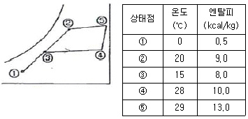
- 31,100kcal/h
- 94,510kcal/h
- 129,600kcal/h
- 172,800kcal/h
(정답률: 34%)
49. 1년 동안의 냉난방에 소요되는 열량 및 연료 비용의 산출과 관계되는 것은?
- 상당외기 온도차
- 풍향 및 풍속
- 냉난방 도일
- 지중온도
(정답률: 59%)
50. 주철제 보일러의 특징에 대한 설명으로 틀린 것은?
- 섹션을 분할하여 반입하므로 현장설치의 제한이 적다.
- 강제 보일러보다 내식성이 우수하여 수명이 길다.
- 강제 보일러보다 급격한 온도변화에 강하여 고온ㆍ고압의 대용량으로 사용된다.
- 섹션을 증가시켜 간단하게 출력을증가시킬 수 있다.
(정답률: 65%)
51. 공장이나 창고 등과 같이 높고 넓은 공간에 주로 사용되는 유닛히터(unit heater)를 설치할 때 주의할 사항으로 틀린 것은?
- 온풍의 도달거리나 확산 직경은 천장고나 흡출 공기 온도에 따라 달라 지므로 설치위치를 충분히 고려해야 한다.
- 토출 공기 온도는 너무 높지 않도록 한다.
- 송풍량을 증가시켜 고온의 공기가상층부에 모이지 않도록 한다.
- 열손실이 가장 적은 곳에 설치한다.
(정답률: 68%)
52. 일사량에 대한 설명으로 틀린 것은?
- 대기투과율은 계절, 시각에 따라 다르다.
- 지표면에 도달하는 일사량을 전일사량이라고 한다.
- 전일사량은 직달일사량에서 천공복사량을 뺀 값이다.
- 일사는 건물의 유리나 외벽, 지붕을 통하여 공조(냉방)부하가 된다.
(정답률: 62%)
53. 단일덕트 정풍량 방식의 장점으로 틀린 것은?
- 각 실의 실온을 개별적으로 제어할 수가 있다.
- 설비비가 다른 방식에 비해 적게든다.
- 기계실에 기기류가 집중 설치되므로 운전, 보수가 용이하고, 진동,소음의 전달 염려가 적다.
- 외기의 도입이 용이하며 환기팬 등을 이용하면 외기냉방이 가능하고 전열교환기의 설치도 가능하다.
(정답률: 62%)
54. 다음 중 보온, 보냉, 방로의 목적으로 덕트 전체를 단열해야 하는것은?
- 급기 덕트
- 배기 덕트
- 외기 덕트
- 배연 덕트
(정답률: 70%)
55. 덕트 설계시 주의사항으로 틀린 것은?
- 덕트 내 풍속을 허용풍속 이하로선정하여 소음, 송풍기 동력 등에문제가 발생하지 않도록 한다.
- 덕트의 단면은 정방형이 좋으나, 그것이 어려울 경우 적정 종횡비로 하여 공기 이동이 원활하게 한다.
- 덕트의 확대부는 15°이하로 하고,축소부는 40°이상으로 한다.
- 곡관부는 가능한 크게 구부리며, 내측 곡률 반경이 덕트 폭보다 작을 경우는 가이드베인을 설치한다.
(정답률: 61%)
56. 어느 실의 냉방 장치에서 실내취득 현열부하가 40000W, 잠열부하가 15000W인 경우 송풍 공기량은? (단, 실내온도 26℃, 송풍 공기온도 12℃, 외기온도 35℃, 공기밀도1.2 kg/m3, 공기의 정압비열은 1.0⑤kJ/kgㆍK이다.)
- 1.658m3/s
- 2.280m3/s
- 2.369m3/s
- 3.258m3/s
(정답률: 51%)
57. 공기조화기에 걸리는 열부하 요소 중 가장 거리가 먼 것은?
- 외기부하
- 재열부하
- 배관 계통에서의 열부하
- 덕트 계통에서의 열부하
(정답률: 56%)
58. 공기 조화 설비에서 처리하는 열부하로 가장 거리가 먼 것은?
- 실내 열취득 부하
- 실내 열손실 부하
- 실내 매연 부하
- 환기용 도입 외기부하
(정답률: 68%)
59. 심야 전력을 이용하여 냉동기를 가동 후 주간냉방에 이용하는 빙축열 시스템의 일반적인 구성장치로 적절한 것은?
- 펌프, 보일러, 냉동기, 증기축열조
- 축열조, 판형열교환기, 냉동기, 냉각탑
- 판형열교환기, 증기트랩, 냉동기, 냉각탑
- 냉동기, 축열기, 브라인펌프, 에어프리히터
(정답률: 69%)
60. 건구온도 32℃, 습구온도 26℃의 신선외기 1800m3/h를 실내로 도입하여 실내공기를 27℃(DB), 50%(RH)의 상태로 유지하기 위해 외기에서 제거해야 할 전열량은? (단, 32℃, 27℃에서의 절대습도는 각각 0.0189kg/m3 0.0112kg/m3이며, 공기의 비중량은 1.2kg/m3, 비열은 0.24kcal/kgㆍK이다.)
- 약 9900kcal/h
- 약 12530kcal/h
- 약 18300kcal/h
- 약 23300kcal/h
(정답률: 32%)
4과목: 전기제어공학
61. 어떤 제어계의 입력으로 단위 임펄스가 가해졌을 때 출력이 te-3t이었다. 이 제어계의 전달함수는?
- 1/(s+3)2
- s/(s+1)(s+2)
- s(s+2)
- (s+1)(s+2)
(정답률: 55%)
62. 다음과 같이 저항이 연결된 회로의 a점과 b점의 전위가 일치할 때, 저항 R1과 R5의 값(Ω)은?
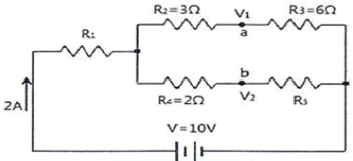
- R1 = 4.5Ω, R5 = 4Ω
- R1 = 1.4Ω, R5 = 4Ω
- R1 = 4Ω, R5 = 1.4Ω
- R1 = 4Ω, R5 = 4.5Ω
(정답률: 50%)
63. 피드백 제어계에서 제어요소에 대한 설명 중 옳은 것은?
- 조작부와 검출부로 구성되어 있다.
- 조절부와 검출부로 구성되어 있다.
- 목표값에 비례하는 신호를 발생하는 요소이다.
- 동작신호를 조작량으로 변화시키는 요소이다.
(정답률: 58%)
64. 제어 동작에 따른 분류 중 불연속제어에 해당되는 것은?
- ON/OFF 동작
- 비례제어 동작
- 적분제어 동작
- 미분제어 동작
(정답률: 75%)
65. PI 동작의 전달함수는? (단, kp는 비례감도이다.)
- kp
- kpsT
- K(1+sT)
- kp(1+1/sT)
(정답률: 57%)
66. 상용전원을 이용하여 직류전동기를 속도제어 하고자 할 때 필요한 장치가 아닌 것은?
- 초퍼
- 인버터
- 정류장치
- 속도센서
(정답률: 48%)
67. 다음 그림과 같은 회로에서 스위치를 2분 동안 닫은 후 개방하였을 때 A지점에서 통과한 모든 전하량을 측정하였더니 240C이었다. 이 때 저항에서 발생한 열량은 약 몇 cal인가?
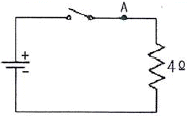
- 80.2
- 160.4
- 240.5
- 460.8
(정답률: 32%)
68. 온도 보상용으로 사용되는 소자는?
- 서미스터
- 바리스터
- 제너다이오트
- 버랙터다이오드
(정답률: 73%)
69. 그림과 같은 회로에서 단자 a,b간에 주파수 f(Hz)의 정현파 전압을가했을 때, 전류값 A1과 A2의 지시가 같았다면 f, L, C간의 관계는?
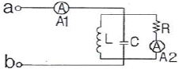
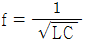
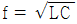
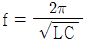
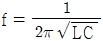
(정답률: 58%)
70. 변압기 Y-Y 결선방법의 특성을 설명한 것으로 틀린 것은?
- 중성점을 접지할 수 있다.
- 상전압이 선간전압의 1/√3이 되므로 절연이 용이하다.
- 선로에 제3조파를 주로 하는 충전전류가 흘러 통신장애가 생긴다.
- 단상변압기 3대로 운전하던 중 한 대가 고장이 발생해도 V결선 운전이 가능하다.
(정답률: 55%)
71. 그림과 같이 트랜지스터를 사용하여 논리소지를 구성한 논리회로의 명칭은?
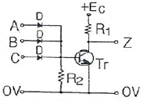
- OR회로
- AND회로
- NOR회로
- NAND회로
(정답률: 40%)
72. 유도전동기에서 슬립이 “0”이란 의미와 같은 것은?
- 유도제동기의 역할을 한다.
- 유도전동기가 정지상태이다.
- 유도전동기가 전부하 운전상태이다.
- 유도전동기가 동기속도로 회전한다.
(정답률: 70%)
73. 자장 안에 놓여 있는 도선에 전류가 흐를 때 도선이 받는 힘 F =BIℓsinθ(N)이다. 이것을설명하는 법칙과 응용기기가 맞게 짝지어진 것은?
- 플레밍의 오른손법칙 - 발전기
- 플레밍의 왼손법칙 - 전동기
- 플레밍의 왼손법칙 - 발전기
- 플레밍의 오른손법칙 – 전동기
(정답률: 63%)
74. 그림과 같은 회로에서 E를 교류전압 V의 실효값이라 할 때, 저항 양단에 걸리는 전압 ed의 평균값은 E 의 약 몇 배 정도인가?
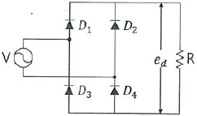
- 0.6
- 0.9
- 1.4
- 1.7
(정답률: 32%)
75. 그림과 같은 R-L 직렬회로에서 공급전압이 10V 일 때 VR = 8V 이면 VL 은 몇 V 인가?
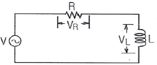
- 2
- 4
- 6
- 8
(정답률: 45%)
76. R-L-C 병렬회로에서 회로가 병렬 공진되었을 때 합성 전류는 어떻게 되는가?
- 최소가 된다.
- 최대가 된다.
- 전류는 흐르지 않는다.
- 전류는 무한대가 된다.
(정답률: 39%)
77. 단위계단 함수 u(t)의 그래프는?
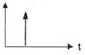
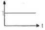
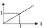
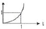
(정답률: 62%)
78. PLC프로그래밍에서 여러 개의 입력 신호 중 하나 또는 그 이상의 신호가 ON 되었을 때 출력이 나오는 회로는?
- OR회로
- AND회로
- NOT회로
- 자기유지회로
(정답률: 72%)
79. 논리식를
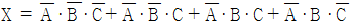
를 가장 간단히 정리한 것은?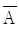
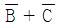
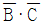
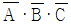
(정답률: 66%)
80. 피드백 제어계를 시퀀스제어계와 비교하였을 경우 그 이점으로 틀린 것은?
- 목표값에 정확히 도달할 수 있다.
- 제어계의 특성을 향상시킬 수 있다.
- 제어계가 간단하고 제어기가 저렴하다.
- 외부조건의 변화에 대한 영향을 줄일 수 있다.
(정답률: 67%)
5과목: 배관일반
81. 평면상의 변위 및 입체적인 변위까지 안전하게 흡수할 수 있는 이음은?
- 스위블형 이음
- 밸로즈형 이음
- 슬리브형 이음
- 볼 조인트 신축 이음
(정답률: 54%)
82. 폴리에틸렌 배관의 접합방법이 아닌 것은?
- 기볼트 접합
- 용착 슬리브 접합
- 인서트 접합
- 테이퍼 접합
(정답률: 45%)
83. 증기 트랩장치에서 필요하지 않은 것은?
- 스트레이너
- 게이트밸브
- 바이패스관
- 안전밸브
(정답률: 43%)
84. 배수 트랩의 구비조건으로 틀린 것은?
- 내식성이 클 것
- 구조가 간단할 것
- 봉수가 유실되지 않는 구조일 것
- 오물이 트랩에 부착될 수 있는 구조일 것
(정답률: 72%)
85. 급수배관 내 권장 유속은 어느 정도가 적당한가?
- 2m/s 이하
- 7m/s 이하
- 10m/s 이하
- 13m/s 이하
(정답률: 64%)
86. 무기질 단열재에 관한 설명으로 틀린 것은?
- 암면은 단열성이 우수하고 아스팔트 가공된 보냉용의 경우 흡수성이 양호하다.
- 유리섬유는 가볍고 유연하여 작업성이 매우 좋으며 칼이나 가위 등으로 쉽게 절단된다.
- 탄산마그네슘 보온재는 열전도율이 낮으며 300~320℃에서 열분해된다.
- 규조토 보온재는 비교적 단열효과가 낮으므로 어느 정도 두껍게 시공하는 것이 좋다.
(정답률: 48%)
87. 열을 잘 반사하고 확산하여 방열기 표면 등의 도장용으로 적합한 도료는?
- 광명단
- 산화철
- 합성수지
- 알루미늄
(정답률: 54%)
88. 냉동기 용량제어의 목적으로 가장 거리가 먼 것은?
- 고내의 온도를 일정하게 할 수 있다.
- 중부하 기동으로 기동이 용이하다.
- 압축기를 보호하여 수명을 연장한다.
- 부하변동에 대응한 용량제어로 경제적인 운전을 한다.
(정답률: 58%)
89. 온수난방 배관에서 리버스 리턴(reverse return)방식를 채택하는 주된 이유는?
- 온수의 유량 분배를 균일하게 하기 위하여
- 배관의 길이를 짧게하기 위하여
- 배관의 신축을 흡수하기 위하여
- 온수가 식지 않도록 하기 위하여
(정답률: 74%)
90. 펌프 주위에 배관 시 주의해야 할 사항으로 틀린 것은?
- 흡입관의 수평배관은 펌프를 향해 위로 올라가도록 설치한다.
- 토출부에 설치한 첵크밸브는 서징현상 방지를 위해 펌프에서 먼 곳에 설치한다.
- 흡입구는 수위면에서부터 관경의 2배 이상 물속으로 들어가게 한다.
- 흡입관의 길이는 되도록 짧게 하는 것이 좋다
(정답률: 63%)
91. 냉매 배관을 시공할 때 주의해야 할 사항으로 가장 거리가 먼 것은?
- 배관은 가능한 한 꺾이는 곳을 적게 하고 꺾이는 곳의 구부림 지름을 작게 한다.
- 관통 부분 이외에는 매설하지 않으며, 부득이한 경우 강관으로 보호한다.
- 구조물을 관통할 때에는 견고하게 관을 보호해야 하며, 외부로의 누설이 없어야 한다.
- 응력발생 부분에는 냉매 흐름 방향에 수평이 되게 루프 배관을 한다.
(정답률: 66%)
92. 배수관은 피복두께를 보통 10mm 정도 표준으로 하여 피복한다. 피복의 주된 목적은?
- 충격방지
- 진동방지
- 방로 및 방음
- 부식방지
(정답률: 62%)
93. 5세주형 700mm의 주철제 방열기를 설치하여 증기온도가 110℃, 실내 공기온도가 20℃이며 난방부하가 25000kcal/h일 때 방열기의 소요 쪽수는? (단, 방열계수 6.9kcal/m2ㆍhㆍ℃, 1쪽당 방열면적 0.28m2이다.)
- 144쪽
- 164쪽
- 154쪽
- 174쪽
(정답률: 54%)
94. 증기난방의 특징에 관한 설명으로 틀린 것은?
- 이용 열량이 증기의 증발잠열로서 매우 크다.
- 실내 온도의 상승이 느리고 예열 손실이 많다.
- 운전을 정지시키면 관에 공기가 유입되므로 관의 부식이 빠르게 진행된다.
- 취급안전상 주의가 필요하므로 자격을 갖춘 기술자를 필요로 한다.
(정답률: 61%)
95. 간접 가열 급탕법과 가장 관계가 먼 장치는?
- 증기 사일런스
- 저탕조
- 보일러
- 고가수조
(정답률: 42%)
96. 하트 포드(Hart ford) 배관법에 관한 설명으로 가장 거리가 먼 것은?
- 보일러 내의 안전 저수면 보다 높은 위치에 환수관을 접속한다.
- 저압증기 난방에서 보일러 주변의 배관에 사용한다.
- 하트포드 배관법은 보일러 내의 수면이 안전수위 이하로 유지하기 위해 사용된다.
- 하트포드 배관 접속 시 환수주관에 침적된 찌꺼기의 보일러 유입을 방지할 수 있다.
(정답률: 53%)
97. 가스배관에 관한 설명으로 틀린 것은?
- 특별한 경우를 제외한 옥내배관은 매설배관을 원칙으로 한다.
- 부득이하게 콘크리트 주요 구조부를 통과할 경우에는 슬리브를 사용한다.
- 가스배관에는 적당한 구배를 두어야 한다.
- 열에 의한 신축, 진동 등의 영향을 고려하여 적절한 간격으로 지지하여야 한다.
(정답률: 72%)
98. 팽창탱크 주위 배관에 관한 설명으로 틀린 것은?
- 개방식 팽창탱크는 시스템의 최상부보다 1m이상 높게 설치한다.
- 팽창탱크의 급수에는 전동밸브 또는 볼밸브를 이용한다.
- 오버플로우관 및 배수관은 간접배수로 한다.
- 팽창관에는 팽창량을 조절할 수 있도록 밸브를 설치한다.
(정답률: 70%)
99. 밸브의 역할이 아닌 것은?
- 유체의 밀도 조절
- 유체의 방향 전환
- 유체의 유량 조절
- 유체의 흐름 단속
(정답률: 71%)
100. 배수트랩의 형상에 따른 종류가 아닌 것은?
- S 트랩
- P 트랩
- U 트랩
- H 트랩
(정답률: 66%)
클라우지우스의 비가역 사이클에서는 열이 역으로 전달되기 때문에 열의 흐름 방향을 고려해야 한다. 따라서 열의 흐름 방향에 따라 부호를 다르게 해주어야 한다.
클라우지우스의 적분은 다음과 같다.
∮ dQ/T ≤ 0
이 식에서 ∮는 사이클 전체를 나타내는 적분 기호이다.
비가역 사이클에서는 열이 역으로 전달되므로, 열의 흐름 방향에 따라 부호를 바꿔주어야 한다. 따라서 부호를 바꾸어 주면 다음과 같다.
∮ dQ/T ≥ 0
이때, ∮ dQ/T는 엔트로피 변화를 의미하므로, 비가역 사이클에서는 엔트로피가 증가한다는 것을 의미한다.
따라서, ""이 정답이다.